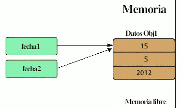

Escribir programas que usen clases y objetos se llama Programación Orientada a Objetos (POO - OOP). Todo programa Java consta de al menos una clase.
La POO orientada a objetos trata de amoldarse al modo de pensar del ser humano y no al de la máquina. El elemento básico de este paradigma de programación es un ente denominado objeto (representa entidades del mundo real). Un objeto es la representación de un concepto para un programa, y contiene toda la información necesaria para abstraer dicho concepto:
- los datos que describen su estado y
- las operaciones que pueden modificar dicho estado, y determinan las capacidades del objeto.
En Java, la programación orientada a objetos gira sobre algunos conceptos clave: clases, objetos, atributos, métodos y herencia.
 Una clase es una plantilla desde la que se pueden crear objetos. Una clase es un tipo de datos no primitivo y creado por programador. Una clase es una abstracción de una entidad del mundo real en la que se definen las propiedades que tiene dicha entidad (atributos) y las acciones que es capaz de realizar (métodos).
Una clase es una plantilla desde la que se pueden crear objetos. Una clase es un tipo de datos no primitivo y creado por programador. Una clase es una abstracción de una entidad del mundo real en la que se definen las propiedades que tiene dicha entidad (atributos) y las acciones que es capaz de realizar (métodos).
Seguro que si digo la palabra "coche" en tu cabeza se forma una idea de lo que es un coche. Pues esta idea, esta abstracción, es la clase "coche".
Toda clase tiene una serie de propiedades (atributos): número de ruedas, velocidad máxima, potencia del motor, tipo de combustible, color de pintura, largo, ancho, alto, número de puertas, número de plazas, capacidad del maletero, etc.
Toda clase tiene una serie de acciones que puede realizar (métodos): avanzar, retroceder, abrir la puerta, arrancar, parar, poner el freno de mano, aparcar, encender la luz, apagar la luz, poner el intermitente, etc.
Así, una clase es una abstracción de algo del mundo real en la que se definen sus atributos y sus métodos.
No todos los atributos ni métodos están accesibles desde fuera de la clase (encapsulación). Desde fuera solo se podrá acceder a una parte a la que se le denomina Interfaz de la clase y que es lo que debemos conocer para utilizar dicha clase. Así, en la clase Coche, no necesitas saber qué hace cuando utilizas el método Arrancar, pero sí debes saber que al llamarlo, el coche se pondrá en marcha. Lo habitual es que solo unos cuantos métodos sean accesibles (algunos métodos especiales se denominan constructores), ocultando el resto.
- Un objeto es una instancia de una clase, al igual que una variable es una instancia de un tipo de dato. Podemos decir que una clase es como una plantilla a partir de la cual podremos crear (instanciar) objetos. Así, el Renault Scenic e-Tech iconic con matrícula 0001-NAA es un objeto concreto y único de la clase COCHE. Los objetos tienen valores concretos para los atributos definidos en la clase y podrán realizar las acciones definidas en los métodos.

- Atributo: es una variable que forman parte de una clase. Una clase puede contener tantos atributos como se desee y pueden ser de cualquier tipo, incluso objetos de otra clase.
- Método: es una función construida en una clase u objeto.
Creación de objetos: Instanciación
Un objeto debe ser instanciado antes de que pueda ser utilizado. Para entender cómo instanciar un objeto de una clase y cómo llamar a los métodos de la clase, debe conocer la Interfaz de la clase (API de la clase), que los creadores de la clase hacen pública. A continuación muestro la interfaz de clase de la clase Fecha creada por mi:
Constructores:
- Fecha() --> crea un objeto Fecha con fecha inicial 1 del 1 de 2000.
- Fecha (int dd, int mm, int aaaa) --> crea un objeto Fecha con fecha dd / mm / aaaa
Métodos:
- int getMes() --> devuelve el número del mes
- int getDia() --> devuelve el número del día
- int getAnyo() --> devuelve el número del año
- boolean setDia(int dd) --> establece el día del objeto Fecha a dd. Si dd es un valor inválido para el mes de la fecha, no cambia la fecha y devuelve false.
- boolean setMes( int mm ) --> establece el mes del objeto a mm. Si mm es un valor inválido, no cambia nada y devuelve false
- void setAnyo( int aaaa ) --> cambia a aaaa el año del objeto Fecha.
- String toString() --> devuelve un objeto de tipo String que contiene una cadena con el formato: "25 de marzo de 2017".
- boolean equals(Object obj) --> compara el objeto Fecha con otro objeto Fecha pasado como parámetro.
La instanciación de un objeto consiste en definir una referencia de objeto (que mantendrá la dirección del objeto en la memoria) y llamar a un método especial de la clase llamado constructor, que tiene el mismo nombre que la clase. El trabajo del constructor es asignar valores iniciales a los datos de la clase. La sintaxis para la instanciación de un objeto es:
Clase nombreObjeto = new ConstructorClase(parámetros);
 Como la clase Fecha tiene dos constructores, podemos crear objetos de tipo Fecha de dos formas distintas:
Como la clase Fecha tiene dos constructores, podemos crear objetos de tipo Fecha de dos formas distintas:
- Fecha fecha2 = new Fecha(); // crea el objeto fecha1 con valores iniciales 01/01/2000
- Fecha fecha1 = new Fecha(15, 05, 2012); // crea el objeto fecha2 con los valores 15/05/2012
Al instanciar un objeto se declara el objeto y se le hace apuntar a una zona de memoria donde se almacena el objeto. Diremos que fecha1 y fecha2 son referencias a los objetos de Fecha, ya que fecha1 y fecha2 no contienen los datos en sí mismos, sino que hacen referencia al lugar de la memoria donde se encuentran.
Un objeto se instancia utilizando el constructor de la clase. Una clase puede tener varios constructores.
Es importante comprender que una referencia de un objeto y un objeto son cosas distintas. El objeto son los datos almacenados en una posición de memoria. La referencia es un elemento que apunta al objeto.
Llamada a métodos
Una vez que se crea una instancia de un objeto, podemos utilizarlo llamando a sus métodos. Un método puede devolver o no un valor del tipo que indica la palabra que va delante del nombre del método. La palabra void significa que no devuelve ningún valor. Para llamar a un método se utiliza la notación:
nombreObjeto.nombreMétodo(arg1, arg2, ...);
donde primero aparece el nombre del objeto, seguido de un punto y el nombre del método, añadiendo entre paréntesis los valores adecuados para los argumentos que tenga.
Así, si queremos cambiar el año del objeto fecha2, haremos la siguiente llamada al método setAnyo(int aaaa):
fecha2.setAnyo(2020);
Si quiero mostrar por pantalla el día del objeto fecha1 llamaré al método getDia(), que devuelve un entero:
System.out.prinln("Día = " + fecha1.getDia()); // muestra: Dia = 15
Y si quiero mostrar la fecha completa:
System.out.println("Fecha: " + fecha1.toString()); // muestra: Fecha: 15 de mayo de 2012
Referencias no instanciadas
Si una referencia no es instanciada, su valor es null. Hay que tener cuidado con las referencias no instanciadas pues puede dar problemas.
Fecha fecha3; // referencia no instanciada. Su valor es null. No hace referencia a ningún objeto
fecha3.setDia(23); // genera un error de compilación
Eliminación de objetos
Java no ofrece soporte para eliminar explícitamente un objeto. En Java existe una herramienta (garbage collector) que se encarga de liberar memoria de forma automática de los objetos que no van a volver a ser utilizados. En el siguiente ejemplo, la referencia fecha2 referenciará al mismo objeto que fecha1, por lo tanto el objeto obj2 ya no está siendo referenciado y no podrá utilizarse. Java libera de forma automática la memoria que ocupa dicho objeto de forma que podrá ser utilizada para otras cosas.
fecha2 = fecha1; // ahora fecha2 referencia al mismo objeto que fecha1.
 Abstracción
Abstracción Encapsulamiento
Encapsulamiento Una
Una